�V.広告
�E1991〜1995年の広告
・1991年
SR-80MXの広告は、エレクトレット・コンデンサー型としては最後の広告であろう。DAコンバーターの第2段DAC-TALENTを推す広告が目立つ。
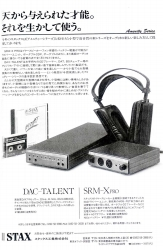 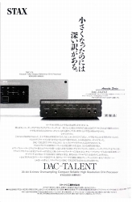 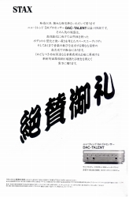 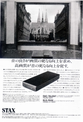 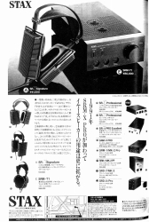
・1992年
ヘッドフォン関係では、SR-Λ（ラムダ）Spritが登場した。1万円台からせいぜい2万円ちょっとだったエレクトレット型+アダプターから、前年のSR-80MXを経て、Λ（ラムダ）のベーシックモデル＋簡易ドライバーヘ、エントリークラス商品の大変更である。ラウドスピーカーでCLASSmodel2がデビューした。この年の広告の上段左から3枚目・4枚目は、見開き広告である。相当力を入れたかった製品だったのであろう。
一方で1988年に続き、再び人員募集広告が登場した。前回よりさらに募集範囲が広がっている。
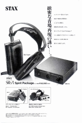 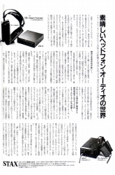 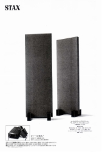 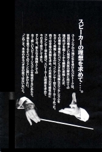 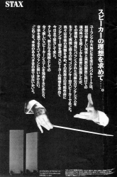
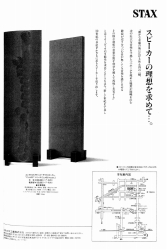 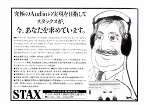
・1993年
ヘッドフォン関係では、SR-Ω（オメガ）の発売予告広告がでた。1971年のSR-Xの予告広告を模したものだ。好評だったらしいDAC-TALENTの改良機、DAC-TALENT
BDが登場。ただしカタログを見るとモノクロであり、会社の内情をうかがわせる。また、まだまだ「定価」の概念が一般的で、値引きは販売店が行うものだったにもかかわらず、セット売りでのメーカー自ら行う値引きキャンペーンが始まったのがこの年である。またキャンペーンの活発化で広告のバリエーションが増えた。
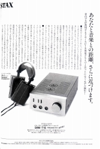 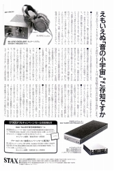 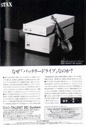 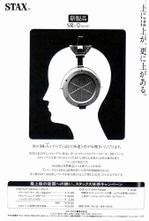 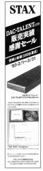 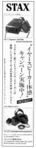
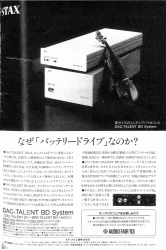 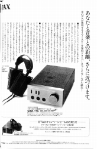 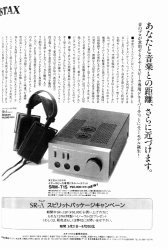
・1994年
SR-Ω（オメガ）の広告や、現在のラインナップの基礎となるLambda
Novaシリーズ登場もあるが、会社の苦しさが全面にでてきている。余剰部品整理としか思えないSR-5NBの発売も、在庫処分としか思えないSR-Λ(ラムダ）15周年セール・・・・
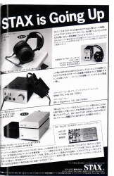 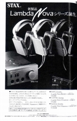 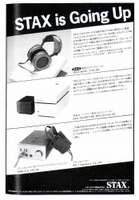 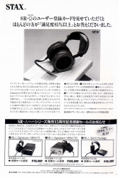 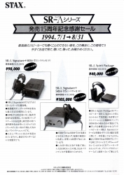
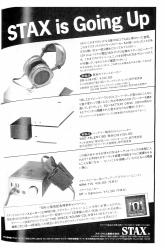 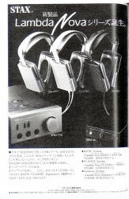 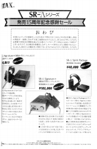 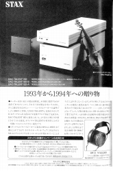 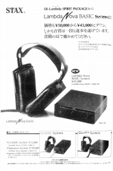
・1995年
「イヤスピーカー発売35周年記念キャンペーン」「ベスト・ステレオコンポ・グランプリ部門賞受賞記念特別セール」「『あなたも一度聴いてみませんか』キャンペーン」「T1特別さよならセール」、最後には「ヘッドホン下取りセール」である。セールは延長したが、その終了まで会社が持たなかった。唯一興味深いのはSR-001の広告。通常のアダプター・ドライバーとの接続用の変換コネクターが予定されていた。正直SR-003をあえて出すより、良心的な姿勢だと思う。
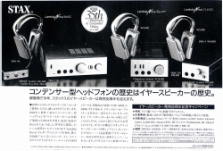 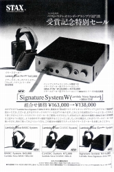 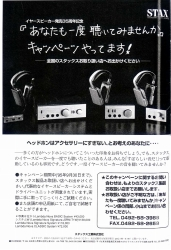 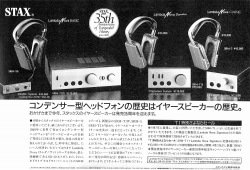
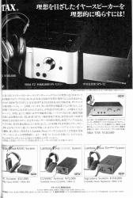 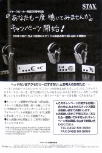 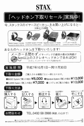 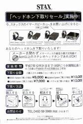 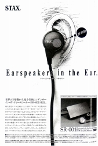